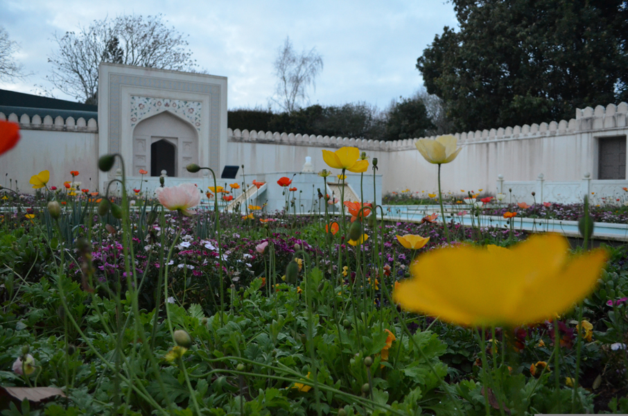

Hamilton Gardens
Hamilton Tourist Location
A World of Beautiful Themed Gardens!
Hamilton Gardens is one of Hamilton's most popular attractions,
featuring a collection of themed gardens inspired by different
cultures and periods throughout history. Each garden has its own
unique design, plants, architecture, and atmosphere, making the
gardens an interesting place to explore.
Visitors can walk through gardens inspired by places such as Japan,
Italy, China, India, and England. The gardens provide plenty of
opportunities for photography and are a great destination for
visitors interested in nature, history, culture, and design. There
are also walking paths and open spaces where visitors can relax and
enjoy the surroundings.
General entry to the gardens is free, making Hamilton Gardens a
budget-friendly attraction. Visitors may still need to consider
costs such as transport and food, particularly if they plan to spend
several hours exploring the gardens.
Facts:
- Located in Hamilton
- Features multiple themed gardens
- Gardens inspired by different cultures and time periods
- Popular location for photography
- Great for walking and exploring
- Suitable for families and visitors of all ages
- General entry is free
Costs:
- Entry to Hamilton Gardens: Free
- Estimated food costs: $10-$30 per person
- Estimated transport costs: $5-$20
- Parking: Free
- Estimated total visit cost: $15-$50 per person